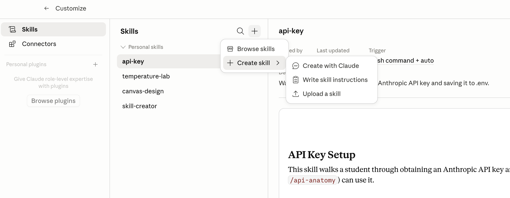

Week 2: Agents and Standing Instructions
Tue Oct 6, 2026
You could get the same behavior by pasting the instructions in the prompt window. OpenAI calls the file AGENTS.md; Google reads either AGENTS.md or GEMINI.md.
| Tool | Where standing instructions live |
|---|---|
| Chat and Cowork | Settings → General → Instructions for Claude, plus instructions on each project |
| Code — Local | CLAUDE.md files on your hard drive |
| Code CLI | the same CLAUDE.md files |
Cowork keeps its instructions in the app, not in files — global in Settings, per-project in the project panel, per-folder in a text box on the folder you select. Chat reads only what you upload or add to a project, so its standing instructions live in the settings rather than in a file.
In CLAUDE.md — one line
Read MAP.md at the start of every session to get oriented in this folder.Building and rebuilding the map is a skill, not a CLAUDE.md rule. We will get to that.
Account-wide
Settings → Instructions for Claude. Read at the start of every conversation and every scheduled task.
One project
A project carries its own instructions alongside its folders and links. Cowork projects live on your computer; Chat projects live in your Claude account.
Project memory
A Cowork project also keeps a memory store. Claude writes to it during a session and reads it back the next time.
Loaded in this order — broadest first, most specific last:
~/.claude/CLAUDE.md — applies to you in every projectCLAUDE.md or .claude/CLAUDE.md in the project folder — checked into git and shared with the teamCLAUDE.local.md in the project folder — yours alone, kept out of git/init drafts one from your folder, # at the start of a prompt appends a line, and /memory opens the files for editing. A folder with an AGENTS.md and no CLAUDE.md is read the same way.
At the start of each conversation, Claude also looks in specific places for SKILL.md files
It looks in your home directory (C:\users\yourname on Windows) and it looks in the project folder
Skills are text files saved on your hard drive. Claude reads the top of each SKILL.md file (the skill description) on startup, and it reads the bulk of the file only when needed
Anthropic publishes its own skills at https://github.com/anthropics/skills
Pre-installed on claude.ai and Claude Desktop
xlsx
Excel workbooks
docx
Word documents
pptx
PowerPoint decks
PDF files
These four activate on their own when a task calls for one. Code execution and file creation must be turned on under Settings → Capabilities.
Slash Command
/skillname at the prompt/planNatural Language
Automatic
Skills are saved prompts for specific tasks — reusable workflows you can share with your team.
SKILL.md fileWorks the same in Chat, Cowork, and Code modes. In Cowork and Code, you can tell Claude to create and save the skill.

Usual process is you work on something, iterating until you get what you want.
You realize you may want the same thing again, and you don’t want to go through the iteration again.
Solution: tell Claude to package the final version as a skill.
Tell Claude to create a skill for your folder named “pirate” with this content: “Always answer like a pirate” (On Claude Desktop: Customize/Skills/Add/Create a skill).
Start a new conversation. Enter /pirate What is the meaning of life?
CLAUDE.md: read MAP.md at the start of every sessionupdate-map skill that scans the folder and writes MAP.md as a table — file, what it is, what it draws on — creating the file if there isn’t oneMAP.md and read itThe skill writes the map on its first run, so there is nothing to set up before you invoke it. The CLAUDE.md line takes effect in the next conversation, not the one you are in.
critique: skill I wrote to review work Claude has produced — a draft, a deck, or code.
Invoked with /critique. It runs several subagents, so it takes longer and uses more tokens than most skills.
A shipping protocol for skills plus scripts, MCP connectors, and other files
Visit the Anthropic plugin directory: Enter /plugin as a Claude prompt or visit https://github.com/anthropics/claude-plugins-official
Thousands of people (including your prof) have created their own plugin marketplaces. Everything is free.
The most useful things will be the ones you create (with Claude’s assistance)
What it adds
Six commands — /analyze, /explore-data, /write-query, /create-viz, /build-dashboard, /validate-data — against any SQL database with an MCP server, or an uploaded CSV
/plugin marketplace add anthropics/knowledge-work-plugins then /plugin install data@knowledge-work-plugins
A checklist with named failure modes, each with how to detect it and how to prevent it:
| Pitfall | What goes wrong |
|---|---|
| Join explosion | A many-to-many join multiplies rows and inflates every count and sum |
| Survivorship bias | Only the entities that still exist are in the data; the churned ones are missing |
| Incomplete period | A partial month compared against a full one |
| Denominator shifting | “Eligible” or “active” was redefined between the periods being compared |
| Average of averages | Group averages averaged together when the groups are different sizes |
| Timezone mismatch | One source on UTC, another on local time, rolled up at different cutoffs |
| Selection bias | The segment is defined by the outcome being measured |
Plus Simpson’s paradox, a QA checklist covering data quality, calculation, reasonableness and presentation, and a verdict of ready to share, share with caveats, or needs revision.
Plugins built by a previous class of mine, plus my own.
/plugin marketplace add kerryback/mgmt803-plugins
critique
Kerry Back
The reviewer from Example 3
job-scout
bazingasc, MGMT 803
Scores current job postings against your resume and says what to fix
/plugin install critique@mgmt803 and /plugin install job-scout@mgmt803
Start a new session after installing — a plugin’s skills don’t load until the session restarts. Job Scout can write its digest to a file, so no Gmail connector is needed. Type /plugin alone to browse the rest.
Brainstorm as a group: What workflows can I use a Claude skill for?
Ask Claude to get the NY gasoline, NY heating oil, and Cushing WTI prices and compute the 3-2-1 crack spread on a per-barrel basis. Ask Claude to produce a plot.
Ask Claude to produce a “crack” skill. On the prompt /crack, Claude should display a plot of the crack spread over the past 12 months
The same job can be a prompt or a skill. Prompt it once to see it work. Save it as a skill when you will run it again.
Think of a task that you need to perform regularly. Ask Claude to create hypothetical data (reports, Excel files, whatever your task involves) for you to experiment with. Perform the task using a prompt. Create a skill so that it is performed the same way each time.
The third group project is a Valuation Skill for Claude. This week is where it starts.
Week 3: Customizing AI
The course ahead
MGMT 675: Generative AI for Finance